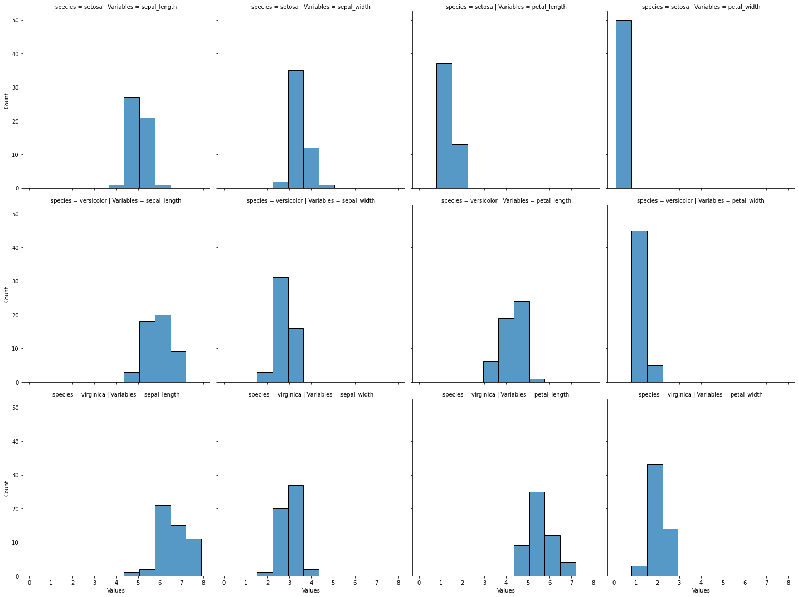
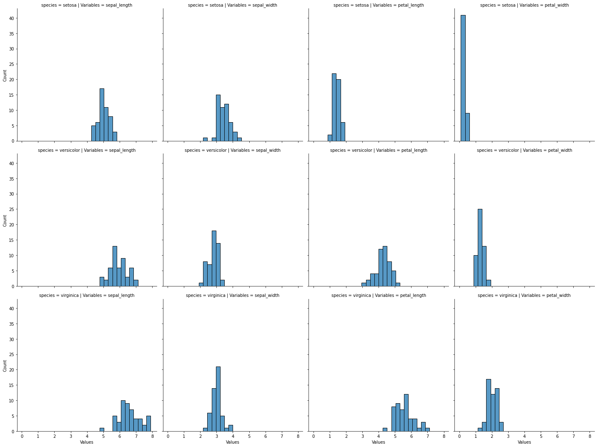
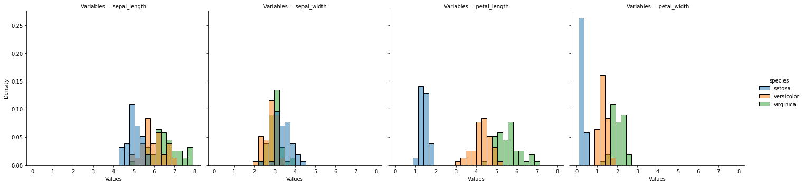
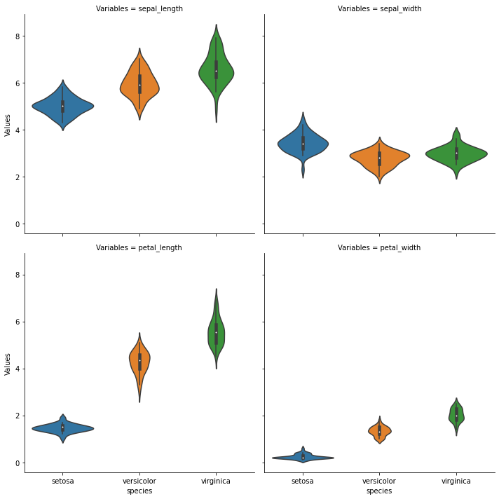

Distribución de los datos
6:58 min | Última modificación: Diciembre 13, 2021 | YouTube
[1]:
import warnings
warnings.filterwarnings("ignore")
[2]:
import matplotlib.pyplot as plt
import numpy as np
import pandas as pd
import seaborn as sns
Definición del problema
El conjunto de datos de la flor Iris contiene 150 muestras de las medidas del ancho y el largo del pétalo y del sépalo para las tres especies de esta flor (Iris setosa, Iris virginica e Iris versicolor). A partir de la muestra de datos se desean responder la siguiente pregunta:
P3.— ¿Cual es la distribución de probabilidades del ancho y largo del petalo y del sepalo para cada especie?
Carga de datos
[3]:
#
# Se cargan los datos y se realiza una inspección
# inicial de la tabla y los datos
#
iris = sns.load_dataset("iris")
display(iris.head(), iris.tail())
| sepal_length | sepal_width | petal_length | petal_width | species | |
|---|---|---|---|---|---|
| 0 | 5.1 | 3.5 | 1.4 | 0.2 | setosa |
| 1 | 4.9 | 3.0 | 1.4 | 0.2 | setosa |
| 2 | 4.7 | 3.2 | 1.3 | 0.2 | setosa |
| 3 | 4.6 | 3.1 | 1.5 | 0.2 | setosa |
| 4 | 5.0 | 3.6 | 1.4 | 0.2 | setosa |
| sepal_length | sepal_width | petal_length | petal_width | species | |
|---|---|---|---|---|---|
| 145 | 6.7 | 3.0 | 5.2 | 2.3 | virginica |
| 146 | 6.3 | 2.5 | 5.0 | 1.9 | virginica |
| 147 | 6.5 | 3.0 | 5.2 | 2.0 | virginica |
| 148 | 6.2 | 3.4 | 5.4 | 2.3 | virginica |
| 149 | 5.9 | 3.0 | 5.1 | 1.8 | virginica |
[4]:
iris_melt = pd.melt(
iris,
id_vars="species",
var_name="Variables",
value_name="Values",
)
Histograma
[5]:
#
# Los histogramas permiten visualizar como se distribuyen los datos en un rango
# determinado.
#
# ¿En que rango son más frecuentes mis datos?
#
sns.displot(
iris_melt,
x="Values",
row="species",
col="Variables",
)
plt.show()

[6]:
#
# Sesgo de interpretación: histogramas con diferente cantidad de particiones
# pueden llevar a que distintas personas puedan llegar a distintas
# interpretaciones
#
sns.displot(
iris_melt,
x="Values",
row="species",
col="Variables",
bins=30,
)
plt.show()

Kernel density estimation
[7]:
sns.displot(
iris_melt,
x="Values",
col="Variables",
hue="species",
bins=30,
stat="density",
)
plt.show()

Diagrama de violin
[8]:
sns.catplot(
x="species",
y="Values",
data=iris_melt,
col="Variables",
kind="violin",
col_wrap=2,
)
plt.show()
